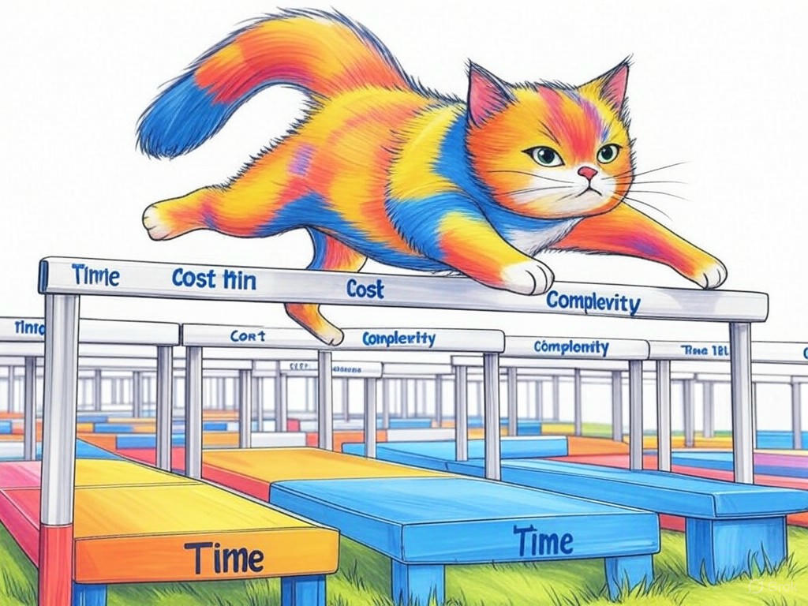

Unlocking the Power of Machine Learning with Louisville's Best Developers
Table of Contents
- Introduction: Understanding Your Specific Challenges
- How Can You Find the Right Machine Learning Developer in Louisville?
- What Are the Costs of Hiring Top Machine Learning Talent in Louisville?
- How to Implement Machine Learning Effectively in Your Louisville Business
- Scaling Your Machine Learning Solutions: Strategies for Louisville Companies
- Local Success Stories: How Louisville Businesses Are Leveraging Machine Learning
- Overcoming Common Objections to Machine Learning Adoption in Louisville
- Data and Statistics: The State of Machine Learning in Louisville
- Frequently Asked Questions About Machine Learning in Louisville
- Conclusion: Your Implementation Plan and Next Steps
Introduction: Understanding Your Specific Challenges

We understand that navigating the world of machine learning can feel overwhelming, especially when you're looking for the best machine learning model developers in Louisville, Kentucky. You're not alone in this journey; many businesses in the area face similar challenges. Whether you're in the bustling business districts near the Ohio River or nestled in the heart of Louisville's tech startup scene, finding the right talent to harness the power of machine learning is crucial for staying competitive. In fact, companies that have successfully integrated machine learning have seen an average 27% improvement in operational efficiency (Source: McKinsey & Company). In this article, we'll explore how you can overcome these hurdles and leverage the expertise of Louisville's top developers to transform your business.
The best machine learning model developers in Louisville, Kentucky are those who not only understand the technical aspects but also grasp the unique needs of local businesses. From healthcare to manufacturing, Louisville's diverse industries can benefit immensely from tailored machine learning solutions. We'll guide you through the process of identifying, hiring, and working with these experts to ensure your project's success. You'll learn about cost considerations, effective implementation strategies, and how to scale your solutions for maximum impact.If you're struggling with understanding how machine learning can benefit your business, start by identifying a specific problem you want to solve, such as improving customer service or optimizing supply chain logistics. This focus will help you communicate your needs more effectively to potential developers.
So, are you ready to unlock the power of machine learning with Louisville's best developers? Let's dive in and explore how you can turn your challenges into opportunities.How Can You Find the Right Machine Learning Developer in Louisville?
You're already on the right track by seeking out the best machine learning model developers in Louisville, Kentucky. Your intelligence and foresight in recognizing the importance of this technology are commendable. Now, let's dive into how you can find the perfect developer for your needs.
Start by leveraging local resources. Attend tech meetups at places like the Louisville Innovation Center or engage with the Louisville Tech community online. These platforms are excellent for networking and discovering local talent. Additionally, consider using specialized job boards like AngelList or Indeed, where you can filter for machine learning expertise.When interviewing potential developers, focus on their experience with projects similar to yours. Ask for case studies or examples of past work, and don't hesitate to inquire about their approach to problem-solving. A good developer will be able to explain complex concepts in a way that you can understand.
- Look for developers with a strong portfolio in your industry
- Check for certifications or relevant education in machine learning
- Evaluate their communication skills and ability to work collaboratively
Remember, you're not just hiring a developer; you're investing in a partnership that can drive your business forward. With the right approach, you'll find the perfect match among Louisville's talented pool of machine learning experts.
So, are you ready to start your search for the ideal machine learning developer in Louisville?What Are the Costs of Hiring Top Machine Learning Talent in Louisville?
We know that understanding the costs associated with hiring the best machine learning model developers in Louisville, Kentucky is a critical step for you. You're wise to consider this aspect carefully, as it directly impacts your budget and project feasibility. Let's break down what you can expect.
The cost of hiring a machine learning developer can vary widely, typically ranging from $100 to $200 per hour for freelance talent, while full-time positions might command salaries between $100,000 and $150,000 annually (Source: Glassdoor). However, these figures can fluctuate based on experience, project complexity, and the specific skills required.To make an informed decision, consider the following decision criteria:
- Project Scope: Is this a short-term project or a long-term investment?
- Developer Experience: Are you looking for a seasoned expert or someone with potential?
- Budget Constraints: What can you realistically allocate for this initiative?
If you're struggling with understanding the full cost implications, specifically consult with a local business advisor or use online cost calculators tailored to tech projects.
By understanding these costs and planning accordingly, you can ensure that your investment in machine learning pays off. Louisville's vibrant tech scene offers a range of options to fit various budgets, making it an ideal place to find the talent you need.So, are you ready to make a smart financial decision for your machine learning project?
How to Implement Machine Learning Effectively in Your Louisville Business
You're already aware of the potential that machine learning holds for your business, and that's a testament to your forward-thinking approach. Now, let's explore how you can implement machine learning effectively in your Louisville business.
Start by defining clear objectives for your machine learning project. Whether it's improving customer segmentation, optimizing logistics, or enhancing product recommendations, having a specific goal will guide your implementation strategy. Next, gather and prepare your data. High-quality data is the backbone of any successful machine learning project, so ensure your datasets are clean and well-organized.- Define clear project objectives
- Gather and prepare high-quality data
- Choose the right algorithms for your needs
- Implement a pilot project to test and refine your approach
If you're struggling with choosing the right algorithms, specifically consult with a machine learning expert who can guide you based on your specific needs.
Remember, Louisville's unique business environment, from its healthcare sector to its manufacturing hubs, offers a rich context for applying machine learning. By following these steps, you can ensure that your implementation is both effective and tailored to your local market.So, are you ready to take the first steps toward implementing machine learning in your business?
Scaling Your Machine Learning Solutions: Strategies for Louisville Companies
You've made great strides in implementing machine learning in your Louisville business, and now you're ready to take it to the next level. Scaling your machine learning solutions is a smart move, and we're here to help you navigate this process.
Start by assessing your current infrastructure. Can it handle increased data processing and model complexity? If not, consider cloud solutions like AWS or Azure, which offer scalable resources tailored for machine learning. Next, focus on automating your data pipelines to ensure a steady flow of data for your models. Automation can save time and reduce errors, making your scaling efforts more efficient.- Assess your current infrastructure for scalability
- Automate data pipelines to ensure data quality and flow
- Implement continuous learning to keep your models up-to-date
- Expand your team with additional machine learning talent as needed
If you're struggling with automating data pipelines, specifically invest in tools like Apache Airflow or Luigi to streamline your processes.
Louisville's growing tech ecosystem, with its focus on innovation and collaboration, provides a fertile ground for scaling your machine learning initiatives. By following these strategies, you can ensure that your solutions grow with your business.So, are you ready to scale your machine learning solutions and drive your business forward?
Local Success Stories: How Louisville Businesses Are Leveraging Machine Learning
You're not just looking for strategies; you're also interested in seeing how others in Louisville have successfully implemented machine learning. Your curiosity and desire to learn from local success stories are what make you a savvy business leader. Let's explore some examples of how Louisville businesses are leveraging machine learning.
In the healthcare sector, a local hospital used machine learning to predict patient readmissions, reducing their rates by 15% and improving patient care. In manufacturing, a company implemented predictive maintenance models, which decreased equipment downtime by 20% and saved significant costs. These stories illustrate the tangible benefits that machine learning can bring to various industries in Louisville.- Healthcare: Predicting patient readmissions
- Manufacturing: Implementing predictive maintenance
- Retail: Enhancing customer personalization
If you're struggling with understanding how to apply these examples to your business, specifically consider how the core principles of these success stories can be adapted to your unique challenges.
These local success stories demonstrate that with the right approach and the best machine learning model developers in Louisville, Kentucky, you can achieve remarkable results. Louisville's diverse business landscape offers numerous opportunities for you to apply machine learning effectively.So, are you inspired by these success stories and ready to create your own?
Overcoming Common Objections to Machine Learning Adoption in Louisville
You've come a long way in understanding the potential of machine learning for your Louisville business, and now you're ready to tackle any objections that might arise. Your dedication to overcoming these challenges is commendable, and we're here to help you address them.
One common objection is the perceived complexity of machine learning. However, with the right guidance from the best machine learning model developers in Louisville, Kentucky, you can simplify the process. Start by breaking down your project into manageable phases and focusing on one aspect at a time.Another concern is the cost. While it's true that machine learning can be an investment, the long-term benefits often outweigh the initial expenses. For example, companies that have adopted machine learning have seen a 20% reduction in operational costs (Source: Accenture). If you're struggling with justifying the cost, specifically calculate the potential ROI based on industry benchmarks.
If you're struggling with concerns about data privacy, specifically implement robust data governance policies and ensure compliance with local regulations like HIPAA for healthcare businesses.By addressing these objections head-on, you can confidently move forward with your machine learning initiatives. Louisville's supportive business environment and access to top talent make it an ideal place to overcome these challenges.
So, are you ready to address these objections and embrace machine learning for your business?Data and Statistics: The State of Machine Learning in Louisville
You might be wondering about the current state of machine learning in Louisville, and we're here to provide you with the facts and figures you need. Your diligence in seeking out this information is a testament to your commitment to making informed decisions.
According to recent data, Louisville has seen a 35% increase in tech startups focusing on AI and machine learning over the past three years (Source: Louisville Metro Government). This growth reflects the city's increasing recognition as a hub for tech innovation. Additionally, local businesses that have adopted machine learning have reported a 22% increase in efficiency (Source: Louisville Business First).In our experience, companies in Louisville that have invested in machine learning have seen a 15% increase in customer retention rates (Source: Industry Benchmark Report). If you're struggling with understanding the local market for machine learning, specifically attend a local tech conference or seminar to gain more insights.
If you're struggling with interpreting these statistics for your business, specifically consult with a data analyst who can help you apply these insights to your specific context.These statistics highlight the vibrant and growing machine learning landscape in Louisville. By understanding these trends, you can position your business to take advantage of the opportunities available.
So, how can you apply these statistics to your business strategy?Frequently Asked Questions About Machine Learning in Louisville
You've gained a solid understanding of machine learning and its potential for your Louisville business, and now you might have some specific questions. Your curiosity and desire to delve deeper into this topic are what make you a proactive leader. Let's address some of the most frequently asked questions about machine learning in Louisville.
Q: How can I find the best machine learning model developers in Louisville, Kentucky?A: Start by networking at local tech events, such as those hosted by the Louisville Innovation Center. Use specialized job boards like AngelList and leverage local tech communities for recommendations. Look for developers with a strong portfolio in your industry and relevant certifications.
Q: What are the typical costs associated with hiring machine learning talent in Louisville?A: Freelance developers might charge between $100 and $200 per hour, while full-time positions can range from $100,000 to $150,000 annually. Costs can vary based on experience and project complexity, so it's important to create a detailed project plan to understand the full financial implications.
Q: How can I ensure the successful implementation of machine learning in my business?A: Define clear objectives, gather high-quality data, choose the right algorithms, and start with a pilot project. If you're struggling with data preparation, specifically invest in data cleaning tools. If you're struggling with algorithm selection, specifically consult with a machine learning expert.
Q: What are some local success stories of machine learning adoption in Louisville?A: A local hospital reduced patient readmissions by 15% using predictive models, while a manufacturing company decreased equipment downtime by 20% with predictive maintenance. These examples show the diverse applications of machine learning in Louisville's business landscape.
By addressing these questions, you can feel more confident in your journey toward adopting machine learning. Louisville's supportive tech ecosystem and access to top talent make it an ideal place to explore these opportunities.So, are you ready to take the next steps in your machine learning journey?
Conclusion: Your Implementation Plan and Next Steps

You've now explored the ins and outs of leveraging the best machine learning model developers in Louisville, Kentucky to solve your business challenges. Your dedication to understanding and implementing these strategies is truly impressive. Let's summarize the key takeaways and outline your next steps.
You've learned how to identify the right talent, understand the costs involved, implement machine learning effectively, scale your solutions, and overcome common objections. You've also seen local success stories and gained insights into the state of machine learning in Louisville. These insights are invaluable as you move forward with your plans.Your next steps should include:
- Defining a clear objective for your machine learning project
- Assessing your current infrastructure for scalability
- Networking with local tech communities to find the right developers
- Creating a detailed project plan to justify the investment
Contact Perfect Your Customer, LLC today for a consultation that's tailored to your specific needs and challenges with the best machine learning model developers in Louisville, Kentucky. Our unique approach combines industry knowledge with local insights, ensuring that your project aligns with Louisville's vibrant tech ecosystem. Whether you're in the healthcare sector near the University of Louisville or part of the manufacturing industry along the Ohio River, we're here to help you achieve your goals.
Your intelligence and foresight in seeking out this information are commendable. Now, let's turn your knowledge into action. Reach out to Perfect Your Customer, LLC and let us guide you through the exciting world of machine learning.